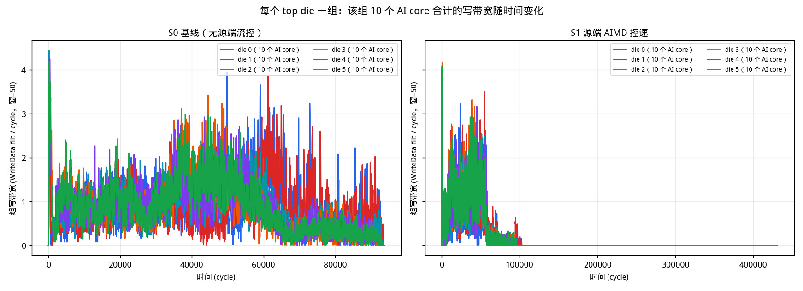
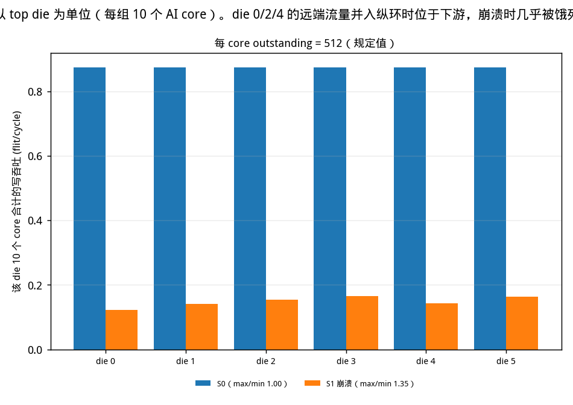
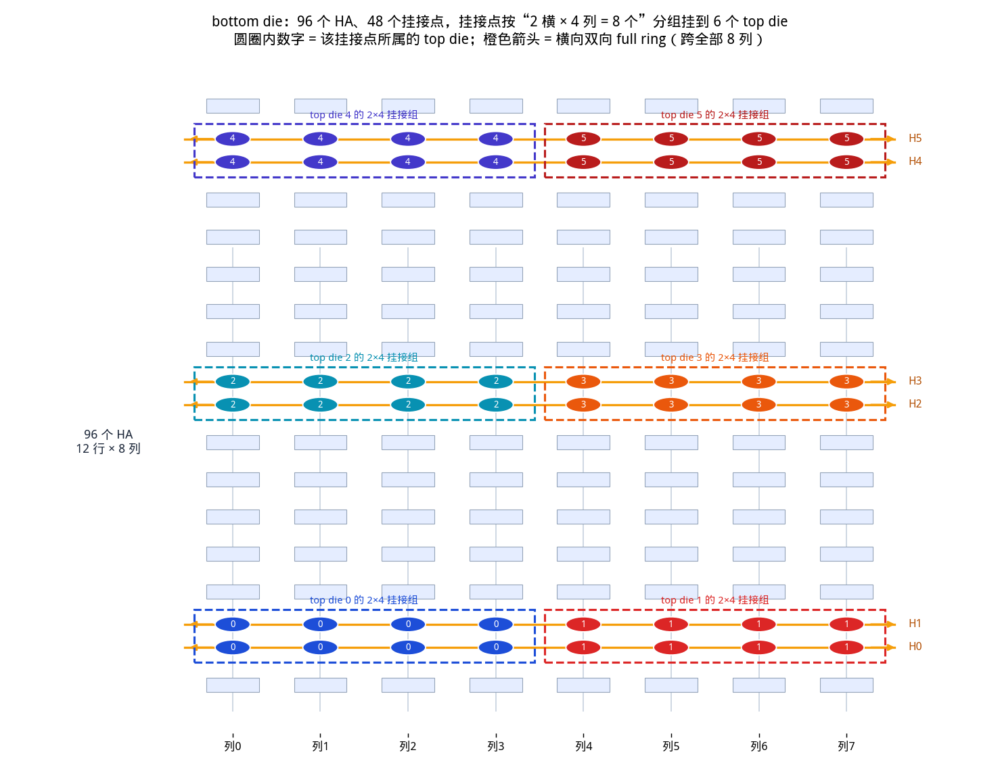
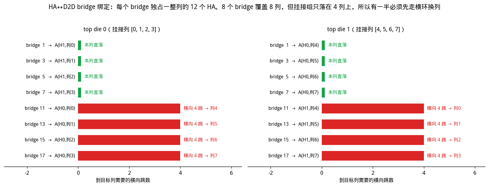
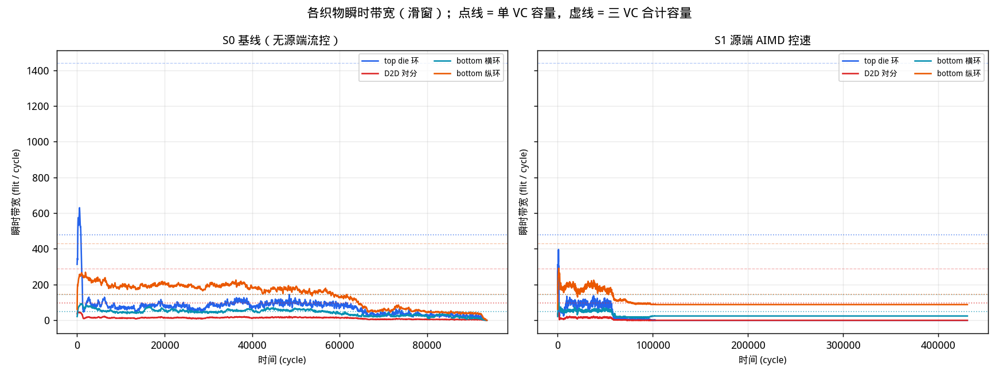

bottom die 横环 4 cycle / 纵环 6 cycle / 挂接点转向 5 cycle。 D2D landing 在 bottom die 上有两个独立接口（接横环、接所在列纵环）。 带宽口径为瞬时带宽（滑窗 flit/cycle，并报单周期峰值）。 workload：burst 128 B、stride 4096 B、 tiling_size 64 KB × 4 tile / core （每核 2048 笔 WriteNoSnp，共 122,880 笔）。 地址按 128 B 交织到 96 个 HA，每核覆盖全部 HA （每核打到同一 HA 的次数 21–22）。 每 core outstanding = 512。 每个 HA 跟踪表 32 项，满了走请求 retry （RetryAck → PCrdGrant → 重发 REQ），不是源端控速。

| 方案 | 批次是否排空 | 完成事务 | makespan | 达下界比例 | Jain | max/min | CoV | 偏转次数 |
|---|---|---|---|---|---|---|---|---|
| S0 基线（无源端流控） | 完成 | 122,880 / 122,880 | 93,683 | 57.4% | 0.99998 | 1.01 | 0.0040 | 442,771 |
| S1 源端 AIMD 控速 | 拥塞崩溃 | 95,534 / 122,880 | 430,685 | 12.5% | 0.98887 | 1.51 | 0.1061 | 3,286,997 |

| 项目 | 取值 | 说明 |
|---|---|---|
| top die 数量 | 6 | 每个是 20 节点、双平面、双向 full ring |
| 每 die 节点角色 | 10 core / 8 D2D bridge / 2 非终端 | 偶数号为 AI core；节点 9、19 既非 core 也非 HA，只转发 |
| AI core 总数 | 60 | 发起方 |
| HA 总数 | 96 | bottom die，12 行 × 8 列 |
| D2D 链路 | 48 | 每 die 8 条，双向，跨 SerDes |
| 挂接点 / bottom D2D | 48 | 按“2 横 × 4 列 = 8 个”一组。每个 D2D landing 两个独立接口：一个接该处横环，一个接所在列纵环。D2D→横、D2D→纵、横↔纵转向是三条 FIFO，只在出环 hop 上互斥 |
| bottom die NoC | 6 横 + 8 纵 half ring | half ring = 单向闭环，仍然回绕，但只走一个方向 |
| 纵环长度 | 18 | 12 个 HA + 6 个挂接点交替排列 |
| 有向链路总数 | 768 | top 480 / D2D 96 / 横 48 / 纵 144 |
| CHI 虚通道 | req / rsp / dat | REQ、RSP、DAT 三条链路独立：每条有向边每拍可同时走 1 REQ + 1 RSP + 1 DAT，互不抢槽 |
| 每笔写的 flit 数 | REQ 1、RSP 2、DAT 4 | WriteNoSnp 四段握手：REQ → DBIDResp → WriteData → Comp |
| 每 core outstanding | 512 | 在途上限：从 REQ 上环占到 Comp 回来。最长无拥塞写 RTT 是 413 cycle |
| HA 请求跟踪表 | 32 项 / HA | 满了走请求 retry：回 RetryAck，再发 PCrdGrant 后重传 REQ |
| 转向 / D2D FIFO 深度 | 64 / 128 | 唯一允许缓冲的地方；链路本身严格无缓冲 |
| workload | burst 128 B / stride 4096 B / tile 64 KB × 4（每核 2048 笔） | 二维密铺：每行 stride/burst 笔，tile/stride 行。128 B 交织到 96 个 HA，每核均匀覆盖全部 HA |
| 链路 | 延迟 | 说明 |
|---|---|---|
| top die 环内链路 | 1 / 2 / 3 / 4 cycle | 共 20 段，按位置不同；两个平面各一份 |
| D2D 跨 die | 4 cycle | SerDes + 跨时钟域 |
| bottom die 横环节点间 | 4 cycle | 挂接点 → 挂接点，单向 half ring |
| bottom die 纵环节点间 | 6 cycle | HA ↔ 挂接点，单向 half ring |
| 挂接点转向 | 5 cycle | 横环 ↔ 纵环，经转向 FIFO；D2D 落地走自己的横/纵接口，不再和转向共队列 |
| D2D bottom 双接口 | 横环口 + 该列纵环口 | SerDes 仍是一条 D2D 边；落地后可同时上横环和上纵环 |


| 目标 HA 所在列 | 位置 | 用的 D2D bridge 节点号 | 该 bridge 在 8 个中的序号 | 组内位置 | 目标列 mod 4 | 落到哪条横环 | 符合 mod-4 规则 |
|---|---|---|---|---|---|---|---|
| 0 | 本 die 的 4 列 | 1 | 0 | 0 | 0 | 近端横环 H1 | 完成 |
| 1 | 本 die 的 4 列 | 3 | 1 | 1 | 1 | 近端横环 H1 | 完成 |
| 2 | 本 die 的 4 列 | 5 | 2 | 2 | 2 | 近端横环 H1 | 完成 |
| 3 | 本 die 的 4 列 | 7 | 3 | 3 | 3 | 近端横环 H1 | 完成 |
| 4 | 另一半的 4 列 | 11 | 4 | 0 | 0 | 远端横环 H0 | 完成 |
| 5 | 另一半的 4 列 | 13 | 5 | 1 | 1 | 远端横环 H0 | 完成 |
| 6 | 另一半的 4 列 | 15 | 6 | 2 | 2 | 远端横环 H0 | 完成 |
| 7 | 另一半的 4 列 | 17 | 7 | 3 | 3 | 远端横环 H0 | 完成 |
一个 top die 的 10 个 AI core 共用一条环、一组 8 个挂接点和 8 条 D2D， 是不可再往下调度的单位。下表是整次运行的合计；上图是同一指标的时间展开。
| outstanding | 方案 | 排空 | 各 die 写吞吐 (flit/cycle) die 0 / 1 / 2 / 3 / 4 / 5 | 合计 | die 间 max/min （按完成量） | die 间 Jain （竞争窗口） | die 间 max/min | die 间 CoV | 最差 die | Jain （按 core） | 最差 die 内部 的 Jain |
|---|---|---|---|---|---|---|---|---|---|---|---|
| 512 | S0 | 完成 | 0.874 / 0.874 / 0.874 / 0.874 / 0.874 / 0.874 | 5.247 | 1.00 | 1.0000 | 1.01 | 0.004 | die 1 | 1.0000 | 1.0000 |
| 512 | S1 | 拥塞崩溃 | 0.122 / 0.140 / 0.154 / 0.164 / 0.143 / 0.164 | 0.887 | 1.35 | 0.9894 | 1.36 | 0.103 | die 0 | 0.9889 | 0.9984 |
CW = 顺时针（环下标 +1），CCW = 逆时针。次数含该核发出的 REQ 和 WriteData。 失败 = 环 slot 忙或 I-tag 挡住，不含 outstanding / AIMD 拒发。 成功 CW/CCW、失败 CW/CCW 是次数比（CW ÷ CCW）。
| die 0 AI core | 成功 CW | 成功 CCW | 成功 CW/CCW | 成功合计 | 失败 CW | 失败 CCW | 失败 CW/CCW | 失败合计 |
|---|---|---|---|---|---|---|---|---|
| core 0（环位 0） | 6,023 | 5,859 | 1.03 | 11,882 | 2,083 | 631 | 3.30 | 2,714 |
| core 2（环位 2） | 5,991 | 5,880 | 1.02 | 11,871 | 1,624 | 884 | 1.84 | 2,508 |
| core 4（环位 4） | 5,874 | 5,997 | 0.98 | 11,871 | 1,288 | 1,132 | 1.14 | 2,420 |
| core 6（环位 6） | 5,829 | 6,006 | 0.97 | 11,835 | 1,101 | 1,201 | 0.92 | 2,302 |
| core 8（环位 8） | 5,938 | 5,936 | 1.00 | 11,874 | 950 | 1,464 | 0.65 | 2,414 |
| core 10（环位 10） | 6,031 | 5,857 | 1.03 | 11,888 | 1,548 | 853 | 1.81 | 2,401 |
| core 12（环位 12） | 5,925 | 5,942 | 1.00 | 11,867 | 1,505 | 894 | 1.68 | 2,399 |
| core 14（环位 14） | 5,838 | 6,002 | 0.97 | 11,840 | 1,110 | 994 | 1.12 | 2,104 |
| core 16（环位 16） | 5,913 | 5,956 | 0.99 | 11,869 | 962 | 1,263 | 0.76 | 2,225 |
| core 18（环位 18） | 6,005 | 5,853 | 1.03 | 11,858 | 1,068 | 1,354 | 0.79 | 2,422 |
| die 0 合计 | 59,367 | 59,288 | 1.00 | 118,655 | 13,239 | 10,670 | 1.24 | 23,909 |
| die 0 AI core | 成功 CW | 成功 CCW | 成功 CW/CCW | 成功合计 | 失败 CW | 失败 CCW | 失败 CW/CCW | 失败合计 |
|---|---|---|---|---|---|---|---|---|
| core 0（环位 0） | 4,194 | 3,781 | 1.11 | 7,975 | 1,089 | 281 | 3.88 | 1,370 |
| core 2（环位 2） | 4,193 | 3,881 | 1.08 | 8,074 | 792 | 549 | 1.44 | 1,341 |
| core 4（环位 4） | 4,054 | 3,895 | 1.04 | 7,949 | 660 | 464 | 1.42 | 1,124 |
| core 6（环位 6） | 4,265 | 4,449 | 0.96 | 8,714 | 447 | 641 | 0.70 | 1,088 |
| core 8（环位 8） | 3,862 | 4,104 | 0.94 | 7,966 | 498 | 719 | 0.69 | 1,217 |
| core 10（环位 10） | 3,803 | 3,985 | 0.95 | 7,788 | 630 | 411 | 1.53 | 1,041 |
| core 12（环位 12） | 4,085 | 4,360 | 0.94 | 8,445 | 614 | 505 | 1.22 | 1,119 |
| core 14（环位 14） | 4,066 | 4,310 | 0.94 | 8,376 | 531 | 589 | 0.90 | 1,120 |
| core 16（环位 16） | 4,002 | 3,931 | 1.02 | 7,933 | 557 | 660 | 0.84 | 1,217 |
| core 18（环位 18） | 4,352 | 3,989 | 1.09 | 8,341 | 535 | 590 | 0.91 | 1,125 |
| die 0 合计 | 40,876 | 40,685 | 1.00 | 81,561 | 6,353 | 5,409 | 1.17 | 11,762 |
口径：每个 cycle 该织物上新发出的 hop 数（瞬时带宽，flit/cycle）。 曲线是 50 cycle 滑窗；表里的峰值是单周期最大。REQ / RSP / DAT 独立，所以 “单 VC 打满”= 峰值达到有向边数，“三 VC 打满”= 达到 3× 边数。

| 织物 | 有向边 | 单 VC 容量 flit/cycle | 三 VC 容量 flit/cycle | 瞬时峰值 flit/cycle | 峰值 / 单 VC | 峰值 / 三 VC | REQ 峰值 | RSP 峰值 | DAT 峰值 | 全程平均 （三 VC） |
|---|---|---|---|---|---|---|---|---|---|---|
| top die 环 | 480 | 480 | 1440 | 655 | 136.5% | 45.5% | 78.3% | 14.8% | 65.8% | 5.1% |
| D2D 对分 | 96 | 96 | 288 | 65 | 67.7% | 22.6% | 49.0% | 20.8% | 26.0% | 4.3% |
| bottom 横环 | 48 | 48 | 144 | 102 | 212.5% | 70.8% | 95.8% | 50.0% | 81.2% | 30.1% |
| bottom 纵环 | 144 | 144 | 432 | 282 | 195.8% | 65.3% | 81.2% | 95.8% | 72.2% | 33.0% |
| 织物 | 有向边 | 单 VC 容量 flit/cycle | 三 VC 容量 flit/cycle | 瞬时峰值 flit/cycle | 峰值 / 单 VC | 峰值 / 三 VC | REQ 峰值 | RSP 峰值 | DAT 峰值 | 全程平均 （三 VC） |
|---|---|---|---|---|---|---|---|---|---|---|
| top die 环 | 480 | 480 | 1440 | 500 | 104.2% | 34.7% | 75.0% | 15.2% | 59.4% | 0.9% |
| D2D 对分 | 96 | 96 | 288 | 58 | 60.4% | 20.1% | 49.0% | 20.8% | 28.1% | 0.8% |
| bottom 横环 | 48 | 48 | 144 | 104 | 216.7% | 72.2% | 93.8% | 50.0% | 91.7% | 19.4% |
| bottom 纵环 | 144 | 144 | 432 | 313 | 217.4% | 72.5% | 81.2% | 99.3% | 74.3% | 23.6% |
| 下界来源 | cycle | 含义 |
|---|---|---|
| 链路下界（分 VC 取最大） | 46,096 | 最忙的一条有向链路上、单个 VC 需要搬运的 flit 数 |
| └ 分 VC 明细 | dat 46,096 / req 11,524 / rsp 25,600 | DAT 是 4 flit/笔，通常是它决定链路下界 |
| 端口下界 | 10,240 | 某个站点注入或弹出端口的总需求（各 VC 合并，端口只有一个） |
| └ 分织物明细 | d2d 8,960 / h 35,840 / top 8,960 / v 53,760 | 纵环 144 条、横环 48 条，横环少但只承担换列流量 |
| 织物切割下界 | 53,760 | 某类织物的总 flit·跳 ÷ 该类链路数 |
| 单事务时延下界 | 609 | 一笔写的四段握手串行时延，与并发无关 |
| 综合下界 | 53,760 | 以上四者取最大 |
S0 效率 0.57，S1 0.12 （下界 / makespan）。
python3 utils/dse_stack_write_fair.py --focus --oc 512 --pos-depth 32python3 utils/gen_stack_write_report.py